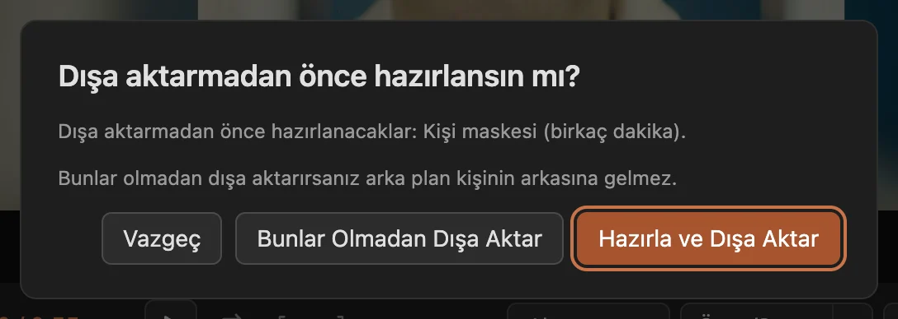

Dışa aktarma
Sağ üstteki Dışa Aktar, her tür dosya için tek bir pencere açar. Seçenekler yukarıdan aşağı okunur: ne, hangi bölüm, boyutu ve kalitesi, sonra seçenekler.

Ne ve hangi bölüm
- Ne: Video, GIF, Sadece ses ya da Altyazı dosyası (SRT ya da WebVTT).
- Bölüm: Tüm Timeline ya da In ve Out koyduysan In ile Out arası.
Boyut
Boyut'ta platformlar hazır: YouTube (1920×1080), YouTube Shorts, Instagram Reels ve TikTok (1080×1920); bir de Orijinal video, Proje formatı ve Özel. Altındaki düğmeler çözünürlüğü seçer: Orijinal, 720p, 1080p, 2K ya da 4K. Projeninkinden büyük bir boyut büyütülür ve daha net olmaz; pencere bunu söyler.
Shorts en çok 3 dakika olabilir.
Kalite ve kodek
- Kalite: Yüksek (önerilen), Master (arşiv ve yeniden kurgu, büyük dosya) ya da Küçük dosya (paylaşım, WhatsApp).
- Kodek: H.264 (her yerde açılır), HEVC / H.265 (aynı kalitede daha küçük), düzenlemeye devam etmek için ProRes 422 ya da Saydam arka plan bırakabilen ProRes 4444. Saydam bir dışa aktarım için Timeline'da V1'i gizle; yalnızca başlıklar ve grafikler kalsın.
Birkaç platform birden
Ayrıca dışa aktar (aynı klasöre) altında platformları işaretle; her biri ilkinden sonra, kendi boyutunda dışa aktarılır.
Seçenekler
- Donanım hızlandırma ekran kartını kullanır: birkaç kat hızlı, dosya biraz daha büyük.
- Bölümler dosyanın içinde, videonun bölümlerini dosyaya yazar. Bölümler Yayın sekmesindeki Yayın Metinlerini Yaz'dan gelir.
- Gelişmiş'te Sabit bit hızı (Mbit/s) var. Boş bırakırsan kaliteye göre ayarlanır.
GIF
Sessiz ve kendini tekrarlayan bir GIF, en çok 60 saniye; genişliğini ve saniyedeki kare sayısını seçersin. Daha uzun bir video için kısa bir bölümün başına ve sonuna In ve Out koy ve In ile Out arası'nı dışa aktar.
Dışa aktar ve bekle
Dışa Aktar…'a bas ve dosyanın nereye gideceğini seç. Önce hazırlanması gereken bir şey varsa, mesela kişiyi takip eden kırpma için kişinin bulunması, Kilnframe ne kadar süreceğiyle birlikte Dışa aktarmadan önce hazırlansın mı? diye sorar: Hazırla ve Dışa Aktar ya da Bunlar Olmadan Dışa Aktar.

Dışa aktarma sürerken Dışa Aktarmayı Durdur işi bitirir.
Oynatma kafasındaki karenin tek bir resmi için: Dosya › Kareyi Dışa Aktar…